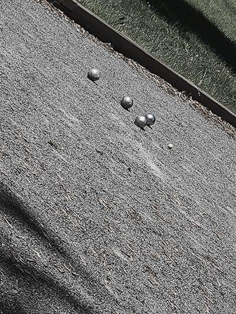
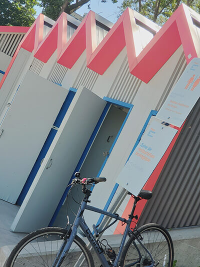
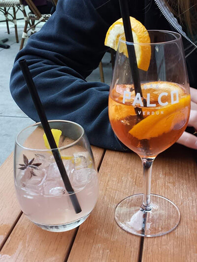

Points of interest

Petanque court at the water's edge of Verdun
All rights reserved 2022, Jennifer Gauthier
Revenge is a dish best served cold, Petanque!

Magnificent view of Verdun beach
All rights reserved 2022, Jennifer Gauthier
Warm up your rind at Verdun beach

Terrace of the Palco bar in Verdun
All rights reserved 2022, Jennifer Gauthier